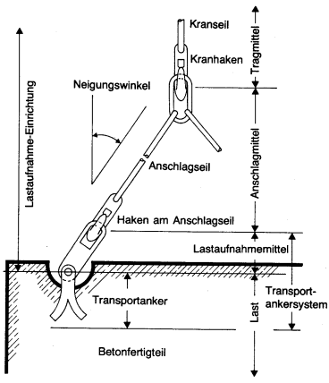

2.1 Transportanker im Sinne dieser Sicherheitsregeln sind Teile, die im Betonfertigteil auf Dauer verankert und als Anschlagpunkt zum Befestigen des Betonfertigteiles
bestimmt sind. Eingebaute Transportanker sind Teile der Last.
Transportanker sind z.B. einbetonierte und zum Teil auch mit der Bewehrung des Betonfertigteiles verbundene Seilschlaufen oder Stahlanker.
2.2 Transportankersysteme im Sinne dieser Sicherheitsregeln sind Baueinheiten, die aus dem im Betonfertigteil auf Dauer verankerten Teil (Transportanker) und dem daran vorübergehend befestigten zugehörigen Lastaufnahmemittel bestehen.
Transportankersysteme sind z. B. Gewindehülsen mit einschraubbaren Seilschlaufen oder besondere Kupplungssysteme (siehe nachfolgende Abbildung).

Abb.: Transportanker und Transportankersysteme
2.3 Tragfähigkeit im Sinne dieser Sicherheitsregeln ist die Last, mit der Transportanker und –systeme höchstens belastet werden dürfen.
Die Tragfähigkeit ist eine Massenangabe und wird daher in kg oder t angegeben.